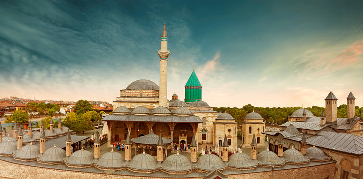
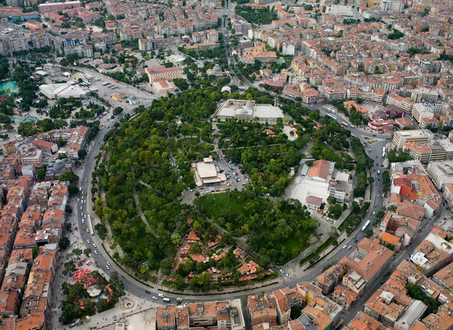
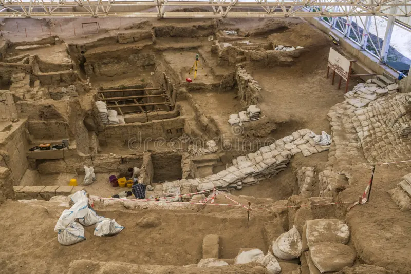
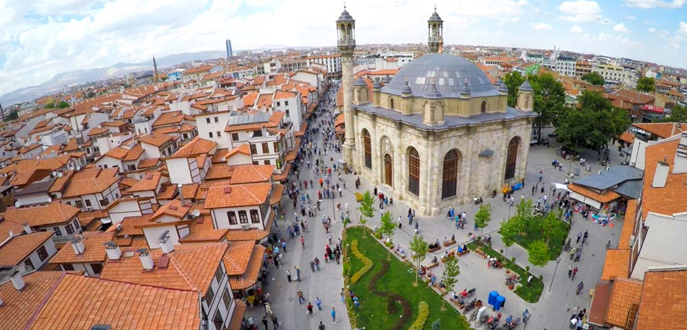
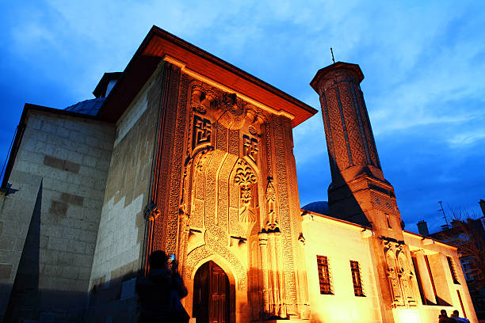
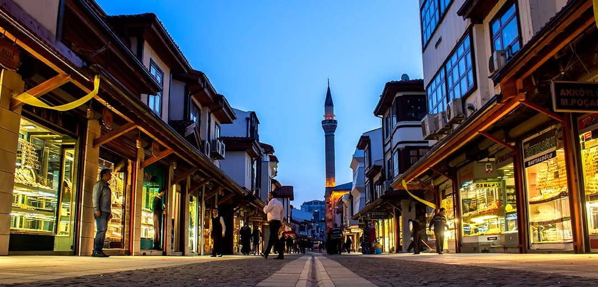
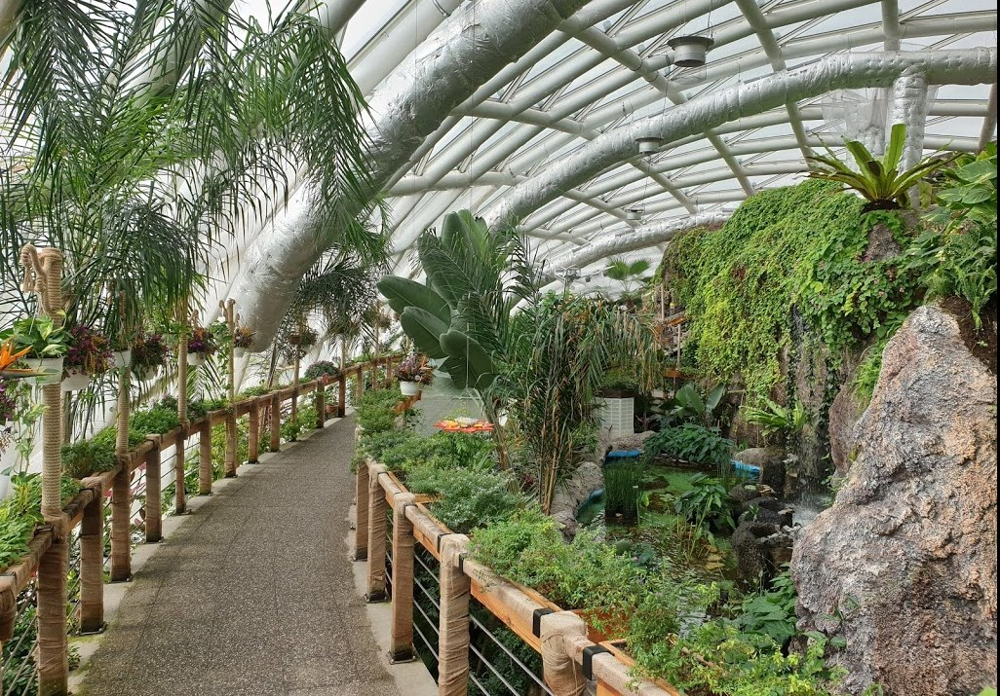
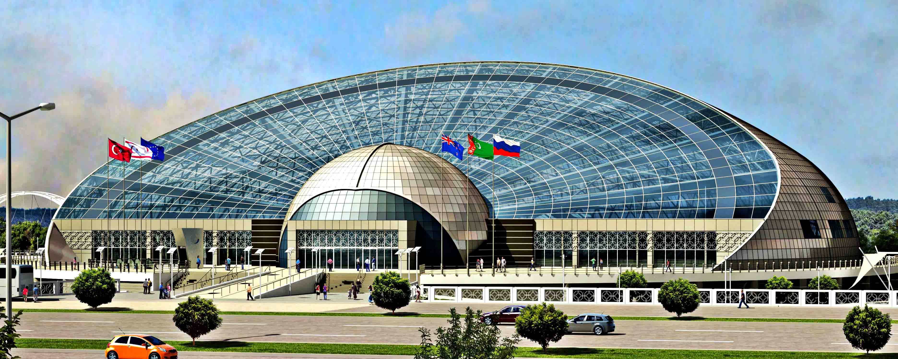

First slide label
Some representative placeholder content for the first slide.

Second slide label
Some representative placeholder content for the second slide.

Third slide label
Some representative placeholder content for the third slide.

Fourth slide label
Some representative placeholder content for the fourth slide.

Fifth slide label
Some representative placeholder content for the fifth slide.

Sixth slide label
Some representative placeholder content for the sixth slide.

Seventh slide label
Some representative placeholder content for the seventh slide.

Eighth slide label
Some representative placeholder content for the eighth slide.

Ninth slide label
Some representative placeholder content for the ninth slide.

Tenth slide label
Some representative placeholder content for the tenth slide.